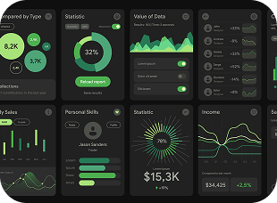
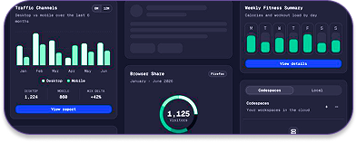
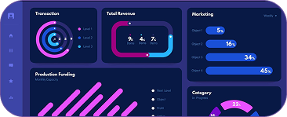
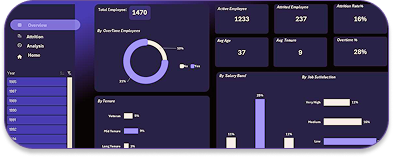

Dados unificados
Reúna indicadores de diferentes áreas em uma única visão estratégica.
Cruzamos dados de performance, cultura e engajamento para gerar insights estratégicos que apoiam líderes, RHs e executivos na tomada de decisões mais conscientes.
Centralize indicadores de performance, engajamento e cultura para liderar com mais clareza e previsibilidade.
Reúna indicadores de diferentes áreas em uma única visão estratégica.

Identifique padrões, riscos e oportunidades com mais rapidez.

Transforme dados de pessoas em ações estratégicas para sua empresa.

Dados espalhados dificultam análises, atrasam decisões e reduzem a eficiência operacional.

Sem visibilidade adequada, oportunidades de desenvolvimento podem ser perdidas.

Antecipar riscos de turnover pode gerar economias significativas.